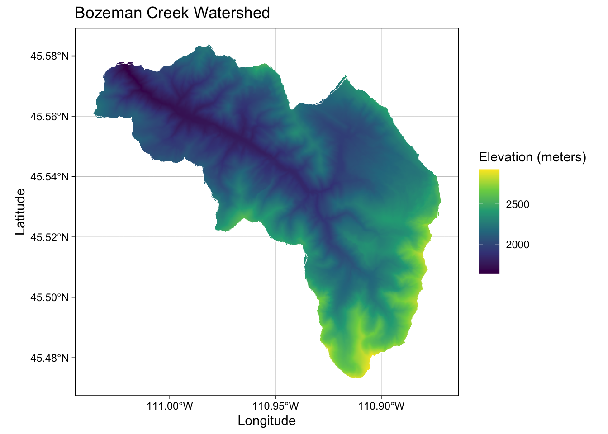

Chapter 16 Downloading DEMs and delineating watersheds (5 pts)
In this tutorial shows you how to download a DEM and delineate a watershed. Your deliverable for this lab is to repeat this workflow for a USGS gauge of your choosing (i.e., not the one in this tutorial) and submit a map with a figure caption noting the gauge number, location, and watershed area in the caption. On the map show a hillshade, the streams, and the gauge.
16.1 Repo here
16.2 StreamStats
There are lots of ways we can delineate watersheds. A particularly easy one is to use the Stream Stats package. Stream Stats is a USGS webpage where you can delineate to a point on a stream. It doesn’t work (hasn’t been developed) in every state (e.g., Wyoming). So it is good to know how to delineate with other packages (e.g., Whitebox).
Let’s first do a watershed delineation using StreamStats. Here is the link to the StreamStats GUI.
knitr::opts_chunk$set(echo = TRUE, include = TRUE, message = FALSE, warning = FALSE)
devtools::install_github("https://github.com/giswqs/whiteboxR")
library(terra)
library(tidyverse)
library(dataRetrieval)
library(whitebox)
whitebox::wbt_init()
library(leaflet)
library(sf)
library(viridis)
library(terrainr)
library(tmap)
library(elevatr)
library(ggnewscale)
library(tidyterra)
library(stars)The gauge we will delineate to today is USGS 06047500 Bozeman Creek near Bozeman MT
gage_info <- readNWISsite(site = "06047500")
xlocation <- gage_info$dec_long_va
ylocation <- gage_info$dec_lat_vaNow we can use the shapefile we just got from StreamStats to download a DEM. We will start by writing the shapefile. Next, we will load the shapefile. And then use that shapefile to download DEMs using terrainr.
# Read in the shape file using library(sf)
boundary <- st_read("stream_stat/layers/globalwatershed.shp")
# Look at the boundary using library(tmap)
tm_shape(boundary) +
tm_polygons()Download USGS DEM with terrainr.
# We could put the coordinates of the gage in and download. We already have the shapefile so we will use that instead. But the commented out code below would do it.
# location_of_interest <- data.frame(
# x = xlocation,
# y = ylocation
# )
#
# location_of_interest <- st_as_sf(
# location_of_interest,
# coords = c("x", "y"),
# crs = 4326
# )
#
# box_of_interest <- set_bbox_side_length(location_of_interest, 20000)
output_tiles <- get_tiles(boundary,
services = c("elevation"),
resolution = 10 # pixel side length in meters
)
output_tiles <- rast(output_tiles[["elevation"]])
writeRaster(output_tiles, "dem/output_tiles.tif", overwrite = TRUE)
tm_shape(output_tiles) +
tm_raster(style = "cont", palette = "-viridis", legend.show = TRUE)Now we can run some Whitebox algorithms like fill sinks, flow accumulation, flow direction, and stream extraction.
We always start hydro-analysis with filling/breaching sinks.
wbt_breach_depressions_least_cost(
dem = "dem/output_tiles.tif",
output = "dem/bzn_crk_breached.tif",
dist = 10,
fill = TRUE)
wbt_fill_depressions_wang_and_liu(
dem = "dem/bzn_crk_breached.tif",
output = "dem/bzn_filled_breached.tif"
)Next, we create flow accumulation and pointer rasters.
wbt_d8_flow_accumulation(input = "dem/bzn_filled_breached.tif",
output = "dem/D8FA.tif")
wbt_d8_pointer(dem = "dem/bzn_filled_breached.tif",
output = "dem/D8pointer.tif")Now, we set a pour point and make it a shape file.
ppoints <- tribble(
~Lon, ~Lat,
xlocation, ylocation
)
ppointsSP <- st_as_sf(ppoints, coords = c("Lon", "Lat"), crs = 4326)
write_sf(ppointsSP, "dem/pourpoints.shp", overwrite = TRUE)Now we can extract the streams like we did last week.
You can play with the threshold to see how it affects the drainage density. This threshold requires some knowledge of the watershed, climate, etc. We will also plot the point and the streams to make sure the point of the gauge falls on the stream as modeled by whitebox.
wbt_extract_streams(flow_accum = "dem/D8FA.tif",
output = "dem/raster_streams.tif",
threshold = 8000)
wbt_jenson_snap_pour_points(pour_pts = "dem/pourpoints.shp",
streams = "dem/raster_streams.tif",
output = "dem/snappedpp.shp",
snap_dist = 0.0010) #careful with this! Know the units of your data
tmap_mode("view")
pp <- read_sf("dem/snappedpp.shp")
streams <- rast("dem/raster_streams.tif")
tm_shape(streams)+
tm_raster(legend.show = TRUE, palette = "darkblue")+
tm_shape(pp)+
tm_dots(col = "red")Now, we can delineate the watershed. This is the whitebox watershed delineation tool. We already did this with the stream stats GUI, but this is good to know how to do as well.
# Delineate the watershed.
wbt_watershed(d8_pntr = "dem/D8pointer.tif",
pour_pts = "dem/snappedpp.shp",
output = "dem/bzn_crk_watershed.tif")
# Write the watershed raster.
ws <- rast("dem/bzn_crk_watershed.tif")
# View the watershed raster.
tm_shape(ws) +
tm_raster(style = "cont", palette = "-viridis", legend.show = TRUE)We have now delineated the watershed. We can now make a hillshade for visualization.
wbt_hillshade(dem = "dem/output_tiles.tif",
output = "dem/bzn_creek_hillshade.tif",
azimuth = 315)
hillshade <- rast("dem/bzn_creek_hillshade.tif")
tm_shape(hillshade) +
tm_raster(style = "cont", palette = "-Greys", legend.show = FALSE)But let’s clip that hillshade to the delineated watershed.
clip_dem <- ws * output_tiles
clip_dem_df <- as.data.frame(clip_dem, xy = TRUE)
colnames(clip_dem_df)[3] <- "elevation"
# remove rows of data frame with one or more NA's,using complete.cases
clip_dem_df <- clip_dem_df[complete.cases(clip_dem_df), ]
# do same for hillshade
clip_hillshade <- ws * hillshade
clip_hillshade_df <- as.data.frame(clip_hillshade, xy = TRUE)
colnames(clip_hillshade_df)[3] <- "hillshade"
clip_hillshade_df <- clip_hillshade_df[complete.cases(clip_hillshade_df), ]Make map with ggplot.
ggplot() +
geom_raster(data = clip_dem_df, aes(x = x, y = y, fill = elevation)) +
geom_sf(data = boundary, fill = NA, color = "white") +
coord_sf() +
scale_fill_viridis_c() +
labs(title = "Bozeman Creek Watershed", x = "Longitude", y = "Latitude", fill = "Elevation (meters)")
Let’s add the pour point, hillshade, and streams to the figure.
# Make streams a data frame then shape.
clip_streams <- ws * streams
clip_streams_df <- as.data.frame(clip_streams, xy = TRUE)
colnames(clip_streams_df)[3] <- "elevation"
clip_streams_df <- clip_streams_df[complete.cases(clip_streams_df), ]
writeRaster(clip_streams, "dem/clip_streams.tif", overwrite = TRUE)
wbt_raster_streams_to_vector(streams = "dem/clip_streams.tif",
d8_pntr = "dem/D8pointer.tif",
output = "dem/streams.shp")
streams_shp <- st_read("dem/streams.shp")Make a map with ggplot, add streams and pour point.
ggplot() +
geom_raster(data = clip_dem_df, aes(x = x, y = y, fill = elevation)) +
geom_sf(data = streams_shp, color = "blue") +
geom_point(data = ppoints, aes(x = Lon, y = Lat), color = "red") +
coord_sf() +
scale_fill_viridis_c() +
labs(title = "Bozeman Creek Watershed", x = "Longitude", y = "Latitude", fill = "Elevation (meters)")
Add hillshade.
ggplot() +
geom_raster(data = clip_hillshade_df,
aes(x = x, y = y, fill = hillshade),
show.legend = FALSE) +
scale_fill_distiller(palette = "Greys") +
new_scale_fill() +
geom_raster(data = clip_dem_df,
aes(x = x, y = y, fill = elevation),
alpha = .7) +
scale_fill_distiller(palette = "GnBu") +
geom_sf(data = streams_shp, color = "blue") +
geom_point(data = ppoints, aes(x = Lon, y = Lat), color = "red") +
guides(fill = guide_colorsteps(barwidth = 20,
barheight = .5,
title.position = "right")) +
labs(fill = "m") +
coord_sf() +
theme_void() +
theme(legend.position = "bottom")Play with colors in. Here change to cold_humid color.
library(ggnewscale)
library(tidyterra)
ggplot() +
geom_raster(data = clip_hillshade_df,
aes(x = x, y = y, fill = hillshade),
show.legend = FALSE) +
scale_fill_distiller(palette = "Greys") +
new_scale_fill() +
geom_raster(data = clip_dem_df,
aes(x = x, y = y, fill = elevation),
alpha = .7) +
scale_fill_cross_blended_c(palette = "cold_humid") +
geom_sf(data = streams_shp, color = "blue") +
geom_point(data = ppoints, aes(x = Lon, y = Lat), color = "red") +
guides(fill = guide_colorsteps(barwidth = 20,
barheight = .5,
title.position = "right")) +
labs(fill = "m") +
coord_sf() +
theme_void() +
theme(legend.position = "bottom")Here change to viridis color.
ggplot() +
geom_raster(data = clip_hillshade_df,
aes(x = x, y = y, fill = hillshade),
show.legend = FALSE) +
scale_fill_distiller(palette = "Greys") +
new_scale_fill() +
geom_raster(data = clip_dem_df,
aes(x = x, y = y, fill = elevation),
alpha = .7) +
scale_fill_continuous(type = "viridis") +
geom_sf(data = streams_shp, color = "blue") +
geom_point(data = ppoints, aes(x = Lon, y = Lat), color = "red") +
labs(fill = "Elevation (m)") +
coord_sf() +
theme_void() +
theme(legend.position = "bottom")You can also make this map with tmap.
tmap_mode("plot")
tm_shape(clip_hillshade) +
tm_raster(style = "cont", palette = "-Greys", legend.show = FALSE) +
tm_scale_bar() +
tm_shape(clip_dem) +
tm_raster(legend.show = FALSE, palette = "-viridis", alpha = 0.5) +
tm_shape(streams_shp) +
tm_lines(col = "blue", lwd = 2) +
tm_scale_bar() +
tm_shape(pp) +
tm_dots(col = "red", size = 0.25) +
tm_layout(title = "Bozeman Creek \nWatershed") +
tm_compass(type = "arrow", position = c("center", "bottom"))